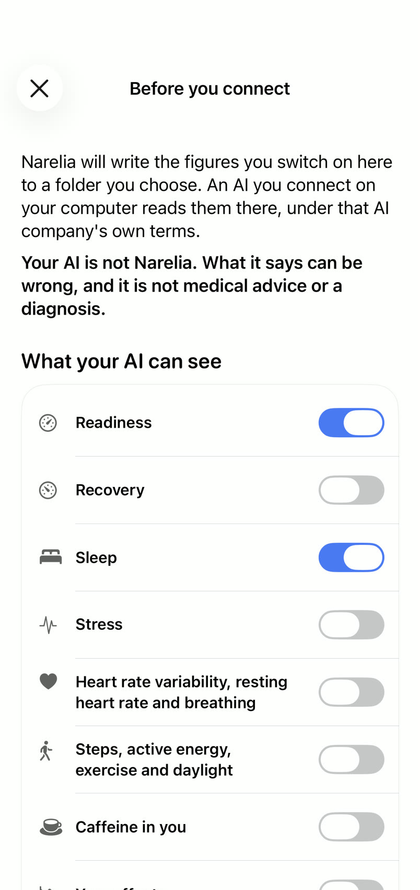
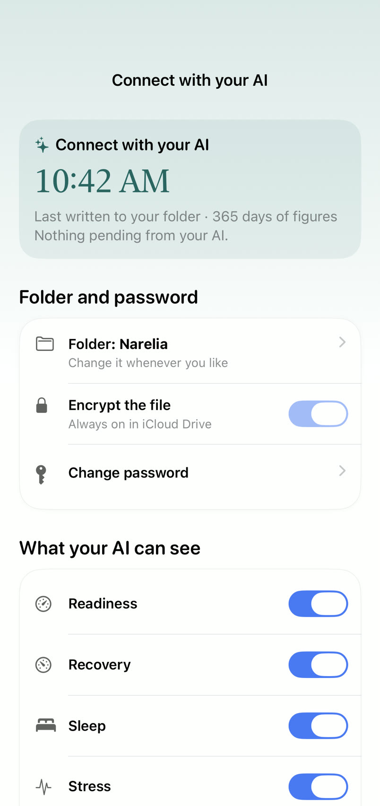
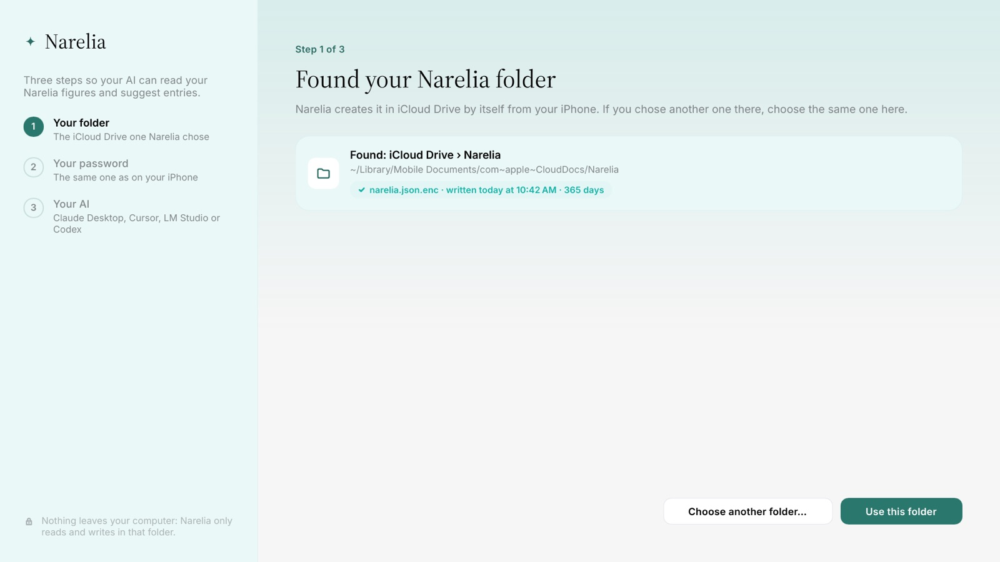
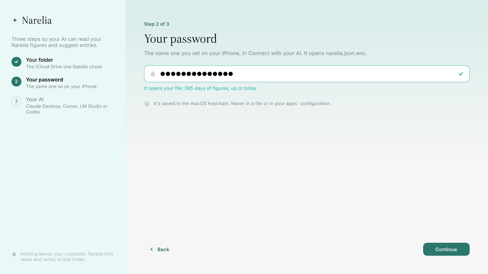
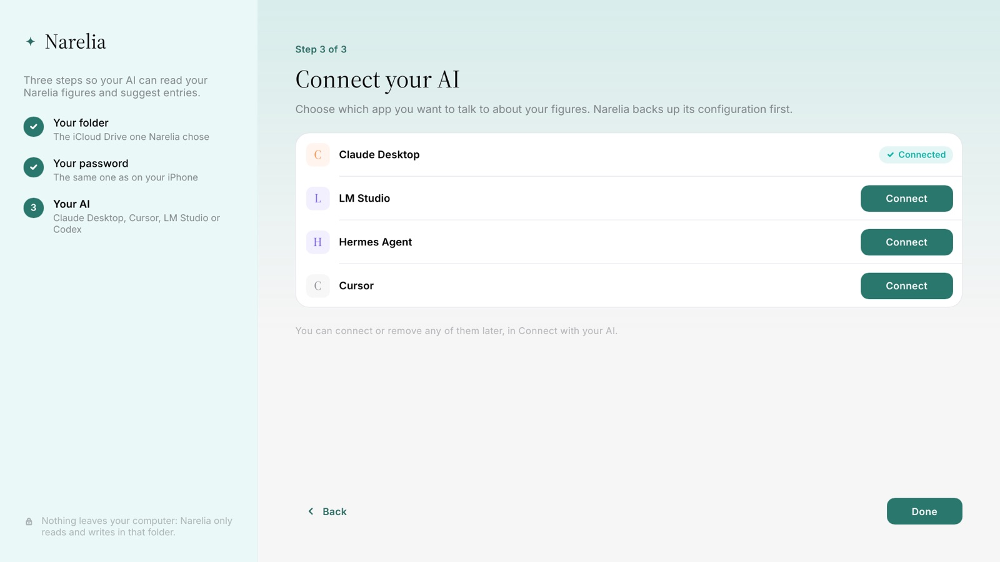
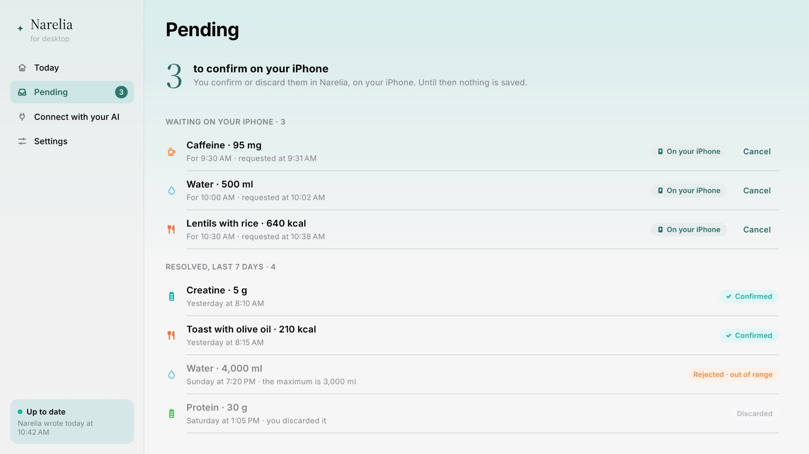
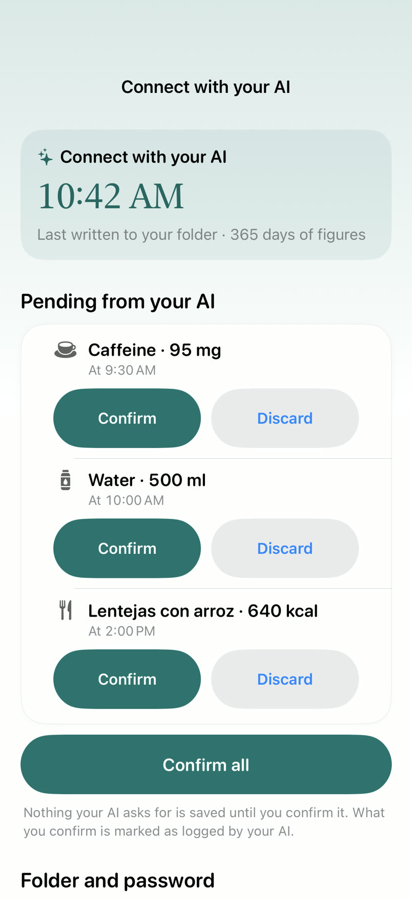

Visual guide · 5 steps · about 10 minutes
Connect Narelia to your AI.
With Narelia for Mac, the AI you already use (Claude, Codex, Cursor, OpenClaw and 18 more) reads your Narelia figures and can propose logs. It does so through narelia-mcp, an MCP server that runs on your own Mac. Nothing goes through a Narelia server, and nothing is saved until you confirm it on the iPhone.
What you need
- A Mac with macOS 13 or later Apple silicon or Intel.
- Narelia 1.1.22 or later with Pro On your iPhone, from the App Store.
- iCloud Drive on both With the same Apple Account.
- An AI app with MCP Any of the 22 on the list.
On the Mac
Install Narelia for Mac
- Download the .dmg of the latest version: Download for macOS
- Open it and drag Narelia to the Applications folder.
- The first time, open it with a right-click. The app is not signed or notarized yet, so macOS warns that it cannot check it. In Applications, right-click (or Control-click) Narelia → “Open” → “Open” (1.1).
- If macOS 15 or later only shows “Done”, go to System Settings → Privacy & Security, scroll down to the Narelia notice and click “Open Anyway” (1.2). You only need to do this once.
On the iPhone, then on the Mac
Pair the Mac with the iPhone
The iPhone and the Mac don’t talk to each other directly: they share an iCloud Drive folder and a password. The iPhone leaves an encrypted file there and the Mac opens it with that same password.
- On the iPhone, open Narelia → Settings → “Connect with your AI”. Choose what your AI can see and tap “Accept and continue” (2.1).
- Tap “Use iCloud Drive › Narelia”: Narelia creates the folder for you. Then “Set password”, at least 8 characters. Keep it: Narelia cannot recover it (2.2).
- On the Mac, open Narelia. It finds the folder by itself; click “Use this folder” (2.3).
- Type the same password as on the iPhone and click “Continue”. It is kept in the macOS Keychain, never in a file (2.4).




On the Mac
Pick your AI
- Narelia first shows the AI apps it finds on this Mac (3.1). The rest stay on the list, under “Connect with your AI”.
- Yours isn’t there? Open it once on this Mac and come back to Narelia. See its card in the 22 apps.

On the Mac
Click “Connect” or copy the snippet
- 15 apps are set up for you. Click “Connect”: Narelia adds its entry to that app’s configuration file, saving a copy next to it first (
*.narelia-copia.*). Then quit the AI app completely and open it again (4.1). - 7 are set up by hand (Claude Code, OpenClaw, Zed, Jan, Msty Studio, Cherry Studio and Chatbox). Click “Show how”: Narelia gives you the text, already with your folder, and where to paste it, with a “Copy” button. The same text, with a placeholder for your user, is on its card.

In your AI, then on the iPhone
Check it with a question
- Start a new conversation in your AI and ask about your figures. If it answers with them, it’s connected.
How did I sleep this week compared with my usual?
Compare my variability this month with last month.
- Ask it to log something, for example “Log a coffee”. The request shows up under “Pending” on the Mac (5.1) and on the iPhone under “Pending from your AI” (5.2). Nothing is saved until you tap “Confirm” on the iPhone.


The screenshots use sample data. On the iPhone itself, keep using Siri to log: AI apps on a phone cannot reach a server on your Mac.
The 22 apps, one by one
Where each one keeps its configuration on the Mac and what to do. For the by-hand ones, here is the exact text Narelia generates.
In the snippets, replace YOUR_USER with your Mac user name, or copy them from the app, which fills in your folder. None of them contains the password.
Chat apps
-
Claude Desktop
Set up for youIts configuration:
~/Library/Application Support/Claude/claude_desktop_config.jsonIn Narelia for Mac, click “Connect” next to Claude Desktop; then quit it completely and open it again.
-
LM Studio
Set up for youIts configuration:
~/.lmstudio/mcp.jsonIn Narelia for Mac, click “Connect” next to LM Studio; then quit it completely and open it again.
-
AnythingLLM
Set up for youIts configuration:
~/Library/Application Support/anythingllm-desktop/storage/plugins/anythingllm_mcp_servers.jsonIn Narelia for Mac, click “Connect” next to AnythingLLM; then quit it completely and open it again.
-
Jan
By handIn Jan: Settings → MCP Servers → «+». Copy the command, arguments and the NARELIA_DIR variable.
{ "command": "/Applications/Narelia.app/Contents/MacOS/narelia-mcp", "args": [], "env": { "NARELIA_DIR": "/Users/YOUR_USER/Library/Mobile Documents/iCloud~com~diego~myhealth/Documents" } } -
Msty Studio
By handIn Msty Studio: Toolbox → Tools → Add New Tool → STDIO / JSON, and paste it.
{ "command": "/Applications/Narelia.app/Contents/MacOS/narelia-mcp", "args": [], "env": { "NARELIA_DIR": "/Users/YOUR_USER/Library/Mobile Documents/iCloud~com~diego~myhealth/Documents" } } -
Cherry Studio
By handIn Cherry Studio: Settings → MCP → MCP Servers → Add → Import from JSON, and paste it.
{ "mcpServers": { "narelia": { "command": "/Applications/Narelia.app/Contents/MacOS/narelia-mcp", "args": [], "env": { "NARELIA_DIR": "/Users/YOUR_USER/Library/Mobile Documents/iCloud~com~diego~myhealth/Documents" } } } } -
Chatbox
By handIn Chatbox: Settings → MCP → add, «Local (stdio)». Copy the command and the NARELIA_DIR variable, then press «Test».
{ "command": "/Applications/Narelia.app/Contents/MacOS/narelia-mcp", "args": [], "env": { "NARELIA_DIR": "/Users/YOUR_USER/Library/Mobile Documents/iCloud~com~diego~myhealth/Documents" } }
Agents
-
Codex
Set up for youIts configuration:
~/.codex/config.tomlIn Narelia for Mac, click “Connect” next to Codex; then quit it completely and open it again.
-
Gemini CLI
Set up for youIts configuration:
~/.gemini/settings.jsonIn Narelia for Mac, click “Connect” next to Gemini CLI; then quit it completely and open it again.
-
Antigravity
Set up for youIts configuration:
~/.gemini/config/mcp_config.jsonIn Narelia for Mac, click “Connect” next to Antigravity; then quit it completely and open it again.
-
OpenCode
Set up for youIts configuration:
~/.config/opencode/opencode.jsonIn Narelia for Mac, click “Connect” next to OpenCode; then quit it completely and open it again.
-
Goose
Set up for youIts configuration:
~/.config/goose/config.yamlIn Narelia for Mac, click “Connect” next to Goose; then quit it completely and open it again.
-
Hermes Agent
Set up for youIts configuration:
~/.hermes/config.yamlIn Narelia for Mac, click “Connect” next to Hermes Agent; then quit it completely and open it again.
-
Muse Code
Set up for youIts configuration:
~/.config/muse/settings.jsonIn Narelia for Mac, click “Connect” next to Muse Code; then quit it completely and open it again.
-
Copilot CLI
Set up for youIts configuration:
~/.copilot/mcp-config.jsonIn Narelia for Mac, click “Connect” next to Copilot CLI; then quit it completely and open it again.
-
Cline
Set up for youIts configuration:
~/.cline/data/settings/cline_mcp_settings.jsonIn Narelia for Mac, click “Connect” next to Cline; then quit it completely and open it again.
-
Claude Code
By handIn a terminal. Then start a new Claude Code session.
claude mcp add-json --scope user narelia '{"type":"stdio","command":"/Applications/Narelia.app/Contents/MacOS/narelia-mcp","args":[],"env":{"NARELIA_DIR":"/Users/YOUR_USER/Library/Mobile Documents/iCloud~com~diego~myhealth/Documents"}}' -
OpenClaw
By handIn a terminal, on the computer that runs the OpenClaw Gateway.
openclaw mcp add narelia --command '/Applications/Narelia.app/Contents/MacOS/narelia-mcp' --env 'NARELIA_DIR=/Users/YOUR_USER/Library/Mobile Documents/iCloud~com~diego~myhealth/Documents'
Code editors
-
Cursor
Set up for youIts configuration:
~/.cursor/mcp.jsonIn Narelia for Mac, click “Connect” next to Cursor; then quit it completely and open it again.
-
VS Code
Set up for youIts configuration:
~/Library/Application Support/Code/User/mcp.jsonIn Narelia for Mac, click “Connect” next to VS Code; then quit it completely and open it again.
-
Devin Desktop
Set up for youIts configuration:
~/.config/devin/mcp_config.jsonIn Narelia for Mac, click “Connect” next to Devin Desktop; then quit it completely and open it again.
-
Zed
By handIn Zed: «zed: open settings file» and paste it inside the outer braces.
{ "context_servers": { "narelia": { "command": "/Applications/Narelia.app/Contents/MacOS/narelia-mcp", "args": [], "env": { "NARELIA_DIR": "/Users/YOUR_USER/Library/Mobile Documents/iCloud~com~diego~myhealth/Documents" } } } }
If it doesn’t work
- macOS won’t open Narelia
- That’s because it isn’t signed yet. Use right-click → “Open”, or System Settings → Privacy & Security → “Open Anyway” (step 1).
- The Mac can’t find the folder
- Open Narelia on the iPhone, under “Connect with your AI”, so it creates the folder and writes to it. Check that iCloud Drive is on for both with the same account, and wait for it to sync. If you picked another folder on the iPhone, choose the same one with “Choose another folder…”.
- The password doesn’t open the file
- It has to be exactly the iPhone’s. If you don’t remember it, change it on the iPhone (“Change password”) and type the new one on the Mac.
- Your AI doesn’t see Narelia
- Quit the AI app completely and open it again: most read their configuration only at launch. In Claude Code, start a new session. For the by-hand ones, check that you pasted the text where its card says.
- “I haven’t touched anything”
- If the configuration file is not valid JSON, TOML or YAML, Narelia leaves it alone and tells you the line. Fix it and click “Connect” again. If your OpenCode uses
opencode.jsonc, add the entry by hand undermcp.servers. - The Mac asks for Keychain access
- That is narelia-mcp reading your password. While the app is unsigned, it can happen once per version: click “Always Allow”.
- Removing the connection
- On the Mac, “Remove” deletes only Narelia’s entry from that app. On the iPhone, “Stop and delete” deletes the files Narelia wrote in your folder and forgets the folder and password. What your AI already received stays with that AI.
Worth knowing
The file is encrypted with AES-256-GCM and a key derived from your password (PBKDF2-SHA256, 600,000 rounds). In iCloud Drive, encryption cannot be turned off.
When you connect an AI, you are the one giving it that data; from then on that company handles it under its own terms, not Narelia’s. With a local model, as in LM Studio or Jan, it doesn’t leave your Mac.
Your AI is not Narelia: what it answers may be wrong, and it is not medical advice or a diagnosis. For any health question, ask a professional.